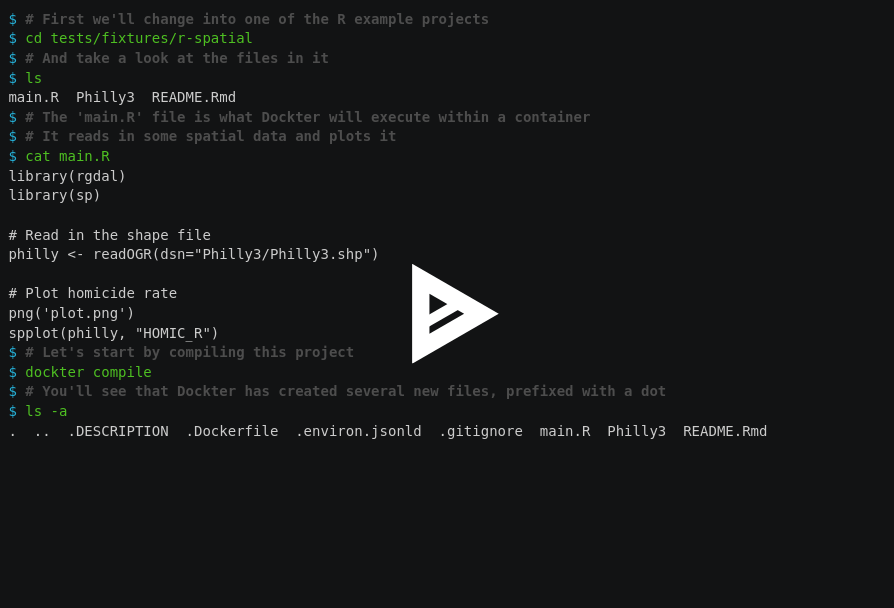

class: center, middle ## Building reproducible computing environments: ### a workshop for non-experts <img src="linux-conf-au.png" width="200" /> #### 25 January 2019 <div> <a href="https://twitter.com/your-twitter-handle">@aleksandrana</a> <a href="https://twitter.com/stencila">@stencila</a> </div> <p style="position: absolute; bottom: 10px; font-size: 10px">Press <code>P</code> to switch to presenter mode</p> --- ### Quick set up 1. Get Docker https://download.docker.com/ 2. Get Dockter https://tinyurl.com/dockter-info/#install 3. Get test files https://tinyurl.com/dockter-tutorial ??? --- ### Motivation * Science needs to be reproducible (“reproducibility crisis”) * Reproducibility is hard, e.g. diversity of tools and dependency hell * Containers help but are yet another thing to learn * Writing and maintaining a Dockerfile for research projects is not trivial --- ### YADT – Yet Another Docker Tool? <p style="text-align:center">Dockter vs other tools</p> * **code analysis** to determine package **requirements**<br/><br/> * fetches **package metadata** to determine **system dependencies** <br/><br/> * **incremental** (=faster) **builds** using language package managers <br/><br/> * easy to **pick up**, easy to **throw away**<br/><br/> * installs **Stencila packages** so that Stencila client interfaces can execute code in the container (optional) --- ### Walkthrough!  --- ### Thank you! <p style="text-align:center; font-size: 25px" >http://stenci.la <br/><br/> https://tinyurl.com/dockter-info<br/> <br/><br/> hello@stenci.la <br/><br/><br/> Gitter / stencila <br/><br/> </p>